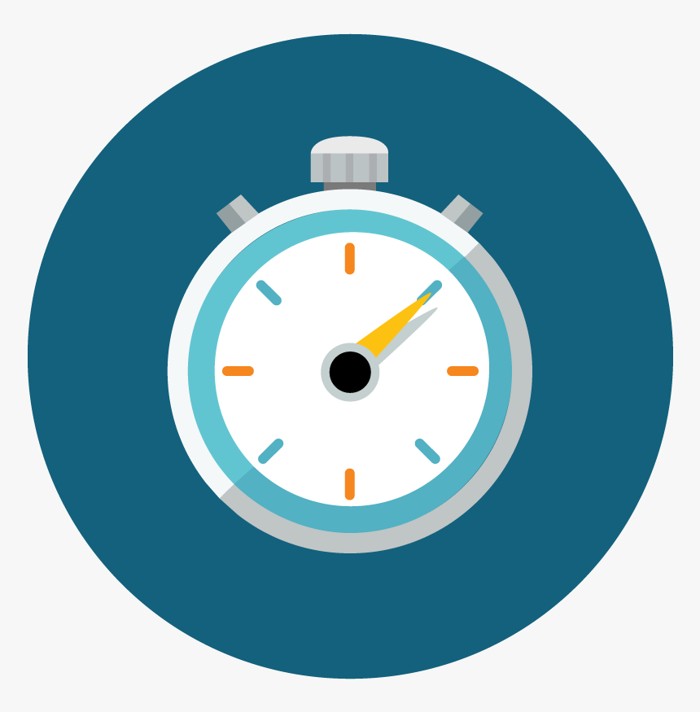

Take these tests and see if you fall under the spectrum of color
blindness.
Cambridge Test
Anomaloscope Test
Farnsworth 100-Hue Test

Reaction Time Test
Cambrdige Color Test
The test consists of colored plates and contains a circle of dots appearing randomized in color and size. Within the pattern are dots, which form a number, difficult to see with a red-green color blindness.
Anomolacope Test
The test is to match fundamental colors red and green. a very simple red-green color blindness test. Just try to match the two colors you see in the boxes. You can get a match using the slider below the box. If you get a match, press Match! and if you can't match them use the No Match Possible
Farnsworth Test
Arrange the colors in the correct order, starting from the reference color. This is the online version of the D-15 test, which Farnsworth introduced in 1947. On mobile, the test is not optimal. Use on PC or tablet.
Reaction Time Test
The Reaction Test was developed as a fun way to identify color changes on the screen. The test shows one color at a time(red, green, yellow) and prompts user to click on the screen when they see the color change.